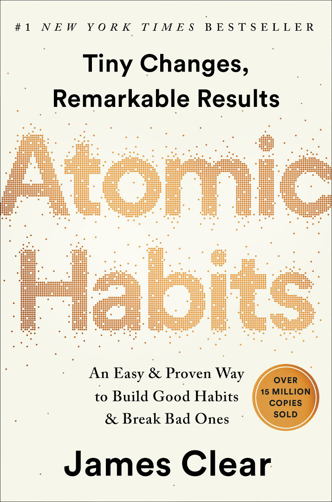

The Catcher in the Rye is a novel by American author J. D. Salinger that was partially published in serial form in 1945–46 before being novelized in 1951. Originally intended for adults, it is often read by adolescents for its themes of angst and alienation, and as a critique of superficiality in society. The Catcher in the Rye has been translated widely. About one million copies are sold each year, with total sales of more than 65 million books. The novel was included on Time's 2005 list of the 100 best English-language novels written since 1923.

25 Sept
Atomic Habits
by James Clear
A supremely practical and useful book. James Clear distils the most fundamental information about habit formation, so you can accomplish more by focusing on less. Building on exchanges he had with readers of his e-mail list, in 2018 Clear published his book Atomic Habits on how to build tiny, frequent habits that have a large beneficial and cumulative effect on one's life. According to the intro of his book, he had to build such habits when rehabilitating from a severe cranial injury that he suffered when playing baseball.